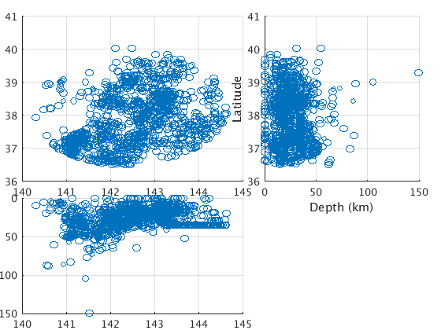
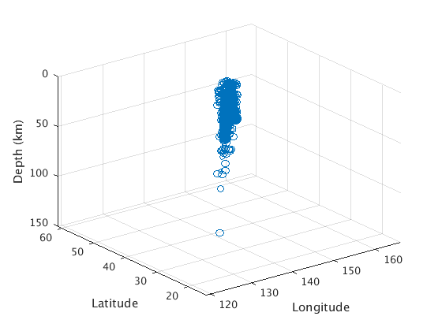
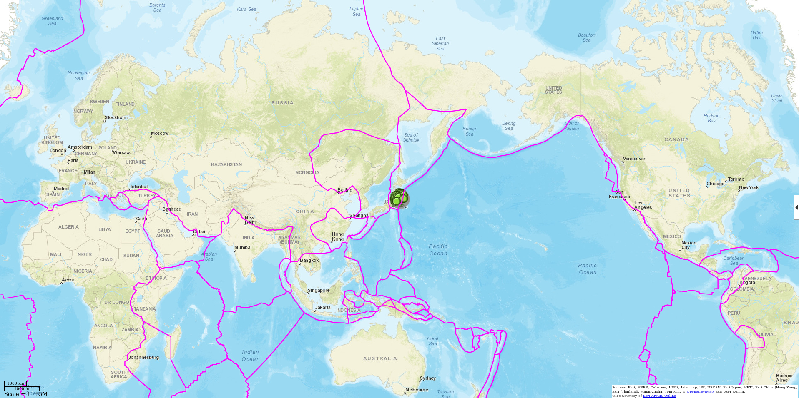
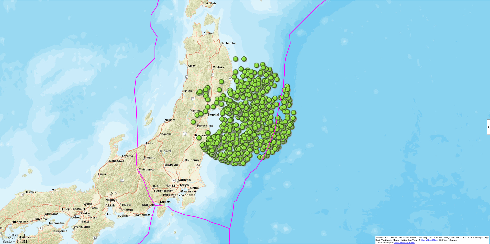
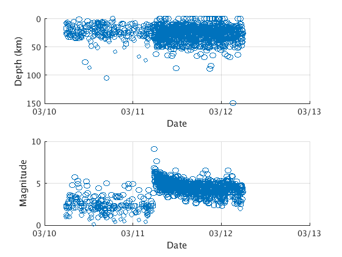
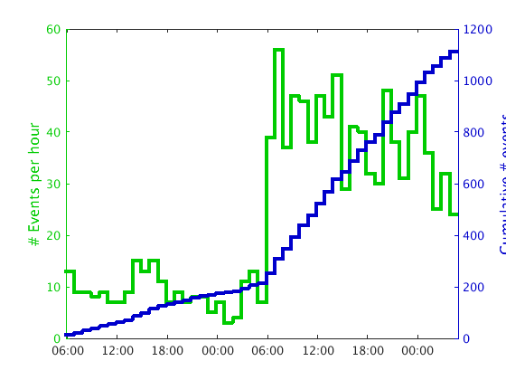
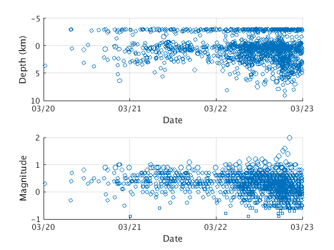
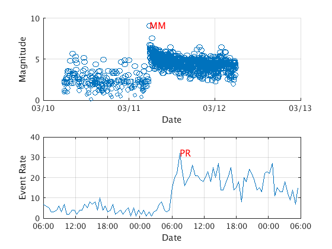
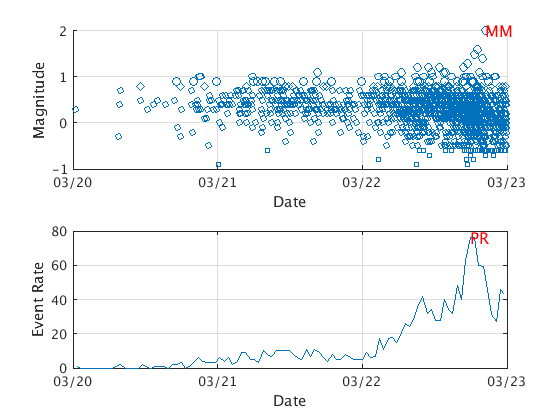
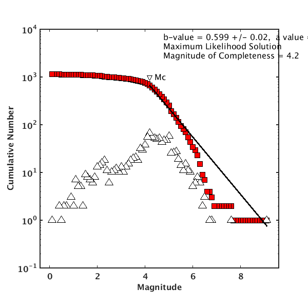

Catalog Cookbook
GISMO can read events from many different earthquake catalog file formats (e.g. Seisan, Antelope) and data sources (e.g. IRIS DMC) using the Catalog.retrieve() method.
Contents
Reading events from IRIS DMC
To load events into a Catalog object we use the Catalog.retrieve method. The first argument is the data source/format - when this is given as 'iris', retrieve uses the irisFetch.m program to retrieve event data via the IRIS webservices. To narrow down our data search we can give retrieve any name-value parameter pairs supported by irisFetch.
In this example we will use retrieve to retrieve all events at IRIS DMC with a magnitude of at least 8.0 from year 2000 to 2014 (inclusive):
greatquakes = Catalog.retrieve('iris', 'minimumMagnitude', 8.0, ... 'starttime', '2000-01-01', 'endtime', '2015-01-01')
fetching...
21 events found *************
parsing into MATLAB structures
Got 21 events
greatquakes =
Number of events: 21
Biggest event: 9.100000 at 11-Mar-2011 05:46:23
otime yyyy_mm_dd hh_mm_ss lon lat depth mag magtype etype ontime offtime
__________ __________ __________ _______ _______ _____ ___ _______ ____________ ______ _______
7.3081e+05 2000_11_16 04:54:56.1 152.18 -3.975 28 8 'Mw' 'earthquake' NaN NaN
7.3103e+05 2001_06_23 20:33:09.3 -73.561 -16.303 2.2 8.4 'MW' 'earthquake' NaN NaN
7.3185e+05 2003_09_25 19:50:07.2 143.87 41.749 33 8.3 'MW' 'earthquake' NaN NaN
7.323e+05 2004_12_23 14:59:00.6 161.58 -49.71 10 8.1 'MW' 'earthquake' NaN NaN
7.3231e+05 2004_12_26 00:58:52.0 95.901 3.4125 26.1 9 'MW' 'earthquake' NaN NaN
7.324e+05 2005_03_28 16:09:35.2 97.113 2.0964 30 8.6 'MW' 'earthquake' NaN NaN
7.328e+05 2006_05_03 15:26:39.9 -174.14 -20.163 53.5 8 'MW' 'earthquake' NaN NaN
7.3283e+05 2006_06_01 18:57:02.9 120.88 19.054 13 8.4 'MS' 'earthquake' NaN NaN
7.3283e+05 2006_06_05 00:50:31.5 119.08 17.992 124 8 'MS' 'earthquake' NaN NaN
7.33e+05 2006_11_15 11:14:14.5 153.21 46.681 12.2 8.3 'MW' 'earthquake' NaN NaN
7.3306e+05 2007_01_13 04:23:23.2 154.5 46.231 22.5 8.1 'MW' 'earthquake' NaN NaN
7.3313e+05 2007_04_01 20:39:56.5 157.03 -8.4468 9.5 8.1 'MW' 'earthquake' NaN NaN
7.3327e+05 2007_08_15 23:40:58.4 -76.555 -13.384 41.2 8 'MW' 'earthquake' NaN NaN
7.333e+05 2007_09_12 11:10:26.8 101.4 -4.4637 35.5 8.5 'MW' 'earthquake' NaN NaN
7.3405e+05 2009_09_29 17:48:11.5 -171.94 -15.512 18.5 8.1 'MW' 'earthquake' NaN NaN
7.342e+05 2010_02_27 06:34:13.3 -72.933 -36.148 28.1 8.8 'MW' 'earthquake' NaN NaN
7.3457e+05 2011_03_11 05:46:23.2 142.5 38.296 19.7 9.1 'MW' 'earthquake' NaN NaN
7.3497e+05 2012_04_11 08:38:37.8 93.014 2.2376 26.3 8.6 'MW' 'earthquake' NaN NaN
7.3497e+05 2012_04_11 10:43:10.5 92.428 0.7675 21.6 8.2 'MW' 'earthquake' NaN NaN
7.3538e+05 2013_05_24 05:44:49.8 153.39 54.815 607 8.3 'MW' 'earthquake' NaN NaN
7.3569e+05 2014_04_01 23:46:47.2 -70.769 -19.61 25 8.2 'mww' 'earthquake' NaN NaN
To access any particular property we can use dot notation, as if the object were a structure, e.g.:
greatquakes.mag
ans =
8.0000
8.4000
8.3000
8.1000
9.0000
8.6000
8.0000
8.4000
8.0000
8.3000
8.1000
8.1000
8.0000
8.5000
8.1000
8.8000
9.1000
8.6000
8.2000
8.3000
8.2000
greatquakes is a Catalog object, an instance of the Catalog class. To see a list of functions ("methods" in object-oriented speak) we can apply to a Catalog object, use the methods command:
methods(greatquakes)
Methods for class Catalog: Catalog plot_counts addwaveforms plot_time bvalue plot_waveform_metrics combine plotprmm disp subclassify eev subset eventrate summary gettimerange webmap hist write list_waveform_metrics write_waveform_metrics_to_antelope plot plot3 Static methods: cookbook retrieve
Save this dataset so you can use it again later:
save('great_earthquakes.mat', 'greatquakes')
Now we'll do another example - we will get events within 200 km of the great M9.0 Tohoku earthquake that occurred on 2011/03/11. The mainshock parameters are:
Date/Time: "2011/03/11 05:46:24" Longitude: 142.372 Latitude: 38.297 Depth: 30 km
We will limit our search to 1 day before and after the earthquake:
mainshocktime = datenum('2011/03/11 05:46:24'); tohoku_events = Catalog.retrieve('iris', ... 'radialcoordinates', [38.297 142.372 km2deg(200)], ... 'starttime', mainshocktime - 1, ... 'endtime', mainshocktime + 1);
fetching... 1134 events found ************* parsing into MATLAB structures Got 1134 events
This returns 1136 earthquakes. Let's get a summary:
tohoku_events.summary()
Variables:
otime: 1134x1 double
Values:
min 7.3457e+05
median 7.3457e+05
max 7.3457e+05
yyyy_mm_dd: 1134x10 char
hh_mm_ss: 1134x10 char
lon: 1134x1 double
Values:
min 140.31
median 142.59
max 144.63
lat: 1134x1 double
Values:
min 36.517
median 37.88
max 40.044
depth: 1134x1 double
Values:
min 0
median 24.95
max 149.7
mag: 1134x1 double
Values:
min 0.1
median 4.3
max 9.1
magtype: 1134x1 cell string
etype: 1134x1 cell string
ontime: 1134x1 double
Values:
min NaN
median NaN
max NaN
NaNs 1134
offtime: 1134x1 double
Values:
min NaN
median NaN
max NaN
NaNs 1134
Save this dataset so you can use it again later:
save('tohoku_events.mat', 'tohoku_events')
Readings events from an Antelope database
To load event data from an Antelope/Datascope CSS3.0 database you will need to have Antelope (http://www.brtt.com/software.html) installed, including the Antelope toolbox for MATLAB (ATM). To see if ATM is installed, use the admin.antelope_exists() command, e.g.
if admin.antelope_exists() disp('Antelope Toolbox for MATLAB found') else disp('Sorry, Antelope not found') end
Antelope Toolbox for MATLAB found
If you do not have ATM installed, any attempt to read from an Antelope database will result in a warning like:
Warning: Sorry, cannot read event Catalog from Antelope database as Antelope toolbox for MATLAB not found
and an empty Catalog object will be returned.
%
For the purpose of this exercise we will be using data from Redoubt volcano from 2009/03/20 to 2009/03/23. We will use snippets from two catalogs that are provided with GISMO in Antelope format:
- The real-time catalog (rtdb200903).
- The analyst-reviewed offical AVO catalog (avodb200903).
Both catalog segments are included in the "demo" directory. We will now load the official AVO catalog into an Events object:
dbpath = fullfile(TESTDATA, 'css3.0', 'avodb200903') avocatalog = Catalog.retrieve('antelope', 'dbpath', dbpath);
dbpath = /home/t/thompsong/src/GISMO.website/testdata/css3.0/avodb200903 Loading data from /home/t/thompsong/src/GISMO.website/testdata/css3.0/avodb200903 Got 1441 events
This should load 1441 events. What if we only want events within 20km of Redoubt volcano? There are two ways to do this. The first is the use the radialcoordinates parameter:
redoubtLon = -152.7431; redoubtLat = 60.4853; maxR = km2deg(20.0); redoubt_events = Catalog.retrieve('antelope', 'dbpath', dbpath, ... 'radialcoordinates', [redoubtLat redoubtLon maxR])
Loading data from /home/t/thompsong/src/GISMO.website/testdata/css3.0/avodb200903
Got 1397 events
redoubt_events =
Number of events: 1397
Biggest event: 2.000000 at 22-Mar-2009 20:21:20
otime yyyy_mm_dd hh_mm_ss lon lat depth mag magtype etype ontime offtime
__________ __________ __________ _______ ______ _____ ____ _______ _____ ______ _______
7.3385e+05 2009_03_20 00:24:41.6 -152.8 60.481 3.62 0.3 'ml' 'a' NaN NaN
7.3385e+05 2009_03_20 07:29:44.8 -152.74 60.494 -3 -0.3 'ml' 'a' NaN NaN
7.3385e+05 2009_03_20 07:43:40.6 -152.78 60.484 -3 0.4 'ml' 'a' NaN NaN
7.3385e+05 2009_03_20 07:48:53.5 -152.75 60.455 0.44 0.7 'ml' 'a' NaN NaN
7.3385e+05 2009_03_20 11:09:21.9 -152.77 60.497 3.09 0.5 'ml' 'a' NaN NaN
7.3385e+05 2009_03_20 11:10:43.2 -152.77 60.488 0.69 0.8 'ml' 'a' NaN NaN
7.3385e+05 2009_03_20 12:20:02.7 -152.77 60.48 -0.15 0.3 'ml' 'a' NaN NaN
7.3385e+05 2009_03_20 13:21:06.0 -152.76 60.488 -2.78 0.4 'ml' 'a' NaN NaN
7.3385e+05 2009_03_20 14:04:39.6 -152.76 60.48 3.72 0.5 'ml' 'a' NaN NaN
7.3385e+05 2009_03_20 15:25:39.3 -152.76 60.486 -2.9 0.4 'ml' 'a' NaN NaN
7.3385e+05 2009_03_20 16:51:47.1 -152.78 60.483 -3 0.5 'ml' 'a' NaN NaN
7.3385e+05 2009_03_20 16:52:08.1 -152.77 60.501 2.12 0.5 'ml' 'a' NaN NaN
7.3385e+05 2009_03_20 17:10:26.7 -152.77 60.484 0.61 0.9 'ml' 'a' NaN NaN
7.3385e+05 2009_03_20 17:17:16.1 -152.73 60.495 -3 -0.1 'ml' 'a' NaN NaN
7.3385e+05 2009_03_20 17:46:27.3 -152.78 60.505 2.59 -0.3 'ml' 'a' NaN NaN
7.3385e+05 2009_03_20 17:46:39.2 -152.76 60.489 -2.46 0.8 'ml' 'a' NaN NaN
7.3385e+05 2009_03_20 17:59:41.8 -152.77 60.487 -2.67 0.3 'ml' 'a' NaN NaN
7.3385e+05 2009_03_20 19:42:17.3 -152.77 60.484 2.28 0.4 'ml' 'a' NaN NaN
7.3385e+05 2009_03_20 19:44:11.7 -152.76 60.49 0.04 0.7 'ml' 'a' NaN NaN
7.3385e+05 2009_03_20 19:46:08.9 -152.77 60.483 -3 -0.2 'ml' 'a' NaN NaN
7.3385e+05 2009_03_20 20:02:49.4 -152.77 60.484 0.12 0.9 'ml' 'a' NaN NaN
7.3385e+05 2009_03_20 20:23:13.9 -152.74 60.489 -1.39 0.4 'ml' 'a' NaN NaN
7.3385e+05 2009_03_20 20:27:29.6 -152.77 60.491 -2.55 0.3 'ml' 'a' NaN NaN
7.3385e+05 2009_03_20 20:35:09.7 -152.77 60.462 5.19 0.5 'ml' 'a' NaN NaN
7.3385e+05 2009_03_20 20:36:50.5 -152.76 60.487 -2.92 0.4 'ml' 'a' NaN NaN
7.3385e+05 2009_03_20 20:39:44.5 -152.77 60.485 3.52 0.5 'ml' 'a' NaN NaN
7.3385e+05 2009_03_20 20:52:01.3 -152.78 60.474 2.36 0.3 'ml' 'a' NaN NaN
7.3385e+05 2009_03_20 21:00:45.1 -152.76 60.484 0.65 1 'ml' 'a' NaN NaN
7.3385e+05 2009_03_20 21:11:41.9 -152.77 60.483 -2.48 0.3 'ml' 'a' NaN NaN
7.3385e+05 2009_03_20 21:13:05.4 -152.78 60.461 6.4 1 'ml' 'a' NaN NaN
7.3385e+05 2009_03_20 21:45:52.3 -152.76 60.482 -3 0.1 'ml' 'a' NaN NaN
7.3385e+05 2009_03_20 21:45:54.8 -152.81 60.482 -2.74 0.8 'ml' 'a' NaN NaN
7.3385e+05 2009_03_20 22:13:19.7 -152.77 60.488 -2.92 0.1 'ml' 'a' NaN NaN
7.3385e+05 2009_03_20 22:20:14.2 -152.77 60.487 2.8 0.3 'ml' 'a' NaN NaN
7.3385e+05 2009_03_20 22:32:48.9 -152.77 60.501 -3 -0.5 'ml' 'a' NaN NaN
7.3385e+05 2009_03_20 22:39:30.5 -152.76 60.491 1 0.6 'ml' 'a' NaN NaN
7.3385e+05 2009_03_20 22:42:14.6 -152.77 60.49 3.57 0.5 'ml' 'a' NaN NaN
7.3385e+05 2009_03_20 22:59:34.3 -152.78 60.478 -3 0.5 'ml' 'a' NaN NaN
7.3385e+05 2009_03_20 23:20:30.0 -152.77 60.491 0.59 0.3 'ml' 'a' NaN NaN
7.3385e+05 2009_03_20 23:43:54.8 -152.76 60.489 0.48 0.9 'ml' 'a' NaN NaN
7.3385e+05 2009_03_20 23:52:53.7 -152.77 60.49 1.14 0.3 'ml' 'a' NaN NaN
7.3385e+05 2009_03_21 00:09:20.6 -152.72 60.487 -3 -0.9 'ml' 'a' NaN NaN
7.3385e+05 2009_03_21 00:09:34.6 -152.77 60.491 3.04 0.5 'ml' 'a' NaN NaN
7.3385e+05 2009_03_21 00:19:32.5 -152.77 60.489 -2.83 0 'ml' 'a' NaN NaN
7.3385e+05 2009_03_21 00:24:39.7 -152.77 60.487 0.66 0.4 'ml' 'a' NaN NaN
7.3385e+05 2009_03_21 00:42:16.9 -152.77 60.497 2.73 0.4 'ml' 'a' NaN NaN
7.3385e+05 2009_03_21 00:44:30.9 -152.77 60.487 -2.06 0.4 'ml' 'a' NaN NaN
7.3385e+05 2009_03_21 00:47:06.5 -152.77 60.492 -0.14 -0.1 'ml' 'a' NaN NaN
7.3385e+05 2009_03_21 00:47:12.3 -152.77 60.493 -0.49 0.6 'ml' 'a' NaN NaN
7.3385e+05 2009_03_21 01:16:51.1 -152.77 60.483 -0.4 0.6 'ml' 'a' NaN NaN
* Only showing first 50 rows/events - to see all rows/events use:
* catalogObject.disp(true)
Anyone familiar with Antelope will know that it subsets databases by using a dbeval subset expression, and the command above does this internally. You can also specify a subset expression directly. The following example is completely equivalent to that above:
expr = sprintf('distance(lat, lon, %f, %f) < %f',redoubtLat, redoubtLon,maxR) redoubt_events = Catalog.retrieve('antelope', 'dbpath', dbpath, ... 'subset_expression', expr)
expr =
distance(lat, lon, 60.485300, -152.743100) < 0.179864
Loading data from /home/t/thompsong/src/GISMO.website/testdata/css3.0/avodb200903
Got 1397 events
redoubt_events =
Number of events: 1397
Biggest event: 2.000000 at 22-Mar-2009 20:21:20
otime yyyy_mm_dd hh_mm_ss lon lat depth mag magtype etype ontime offtime
__________ __________ __________ _______ ______ _____ ____ _______ _____ ______ _______
7.3385e+05 2009_03_20 00:24:41.6 -152.8 60.481 3.62 0.3 'ml' 'a' NaN NaN
7.3385e+05 2009_03_20 07:29:44.8 -152.74 60.494 -3 -0.3 'ml' 'a' NaN NaN
7.3385e+05 2009_03_20 07:43:40.6 -152.78 60.484 -3 0.4 'ml' 'a' NaN NaN
7.3385e+05 2009_03_20 07:48:53.5 -152.75 60.455 0.44 0.7 'ml' 'a' NaN NaN
7.3385e+05 2009_03_20 11:09:21.9 -152.77 60.497 3.09 0.5 'ml' 'a' NaN NaN
7.3385e+05 2009_03_20 11:10:43.2 -152.77 60.488 0.69 0.8 'ml' 'a' NaN NaN
7.3385e+05 2009_03_20 12:20:02.7 -152.77 60.48 -0.15 0.3 'ml' 'a' NaN NaN
7.3385e+05 2009_03_20 13:21:06.0 -152.76 60.488 -2.78 0.4 'ml' 'a' NaN NaN
7.3385e+05 2009_03_20 14:04:39.6 -152.76 60.48 3.72 0.5 'ml' 'a' NaN NaN
7.3385e+05 2009_03_20 15:25:39.3 -152.76 60.486 -2.9 0.4 'ml' 'a' NaN NaN
7.3385e+05 2009_03_20 16:51:47.1 -152.78 60.483 -3 0.5 'ml' 'a' NaN NaN
7.3385e+05 2009_03_20 16:52:08.1 -152.77 60.501 2.12 0.5 'ml' 'a' NaN NaN
7.3385e+05 2009_03_20 17:10:26.7 -152.77 60.484 0.61 0.9 'ml' 'a' NaN NaN
7.3385e+05 2009_03_20 17:17:16.1 -152.73 60.495 -3 -0.1 'ml' 'a' NaN NaN
7.3385e+05 2009_03_20 17:46:27.3 -152.78 60.505 2.59 -0.3 'ml' 'a' NaN NaN
7.3385e+05 2009_03_20 17:46:39.2 -152.76 60.489 -2.46 0.8 'ml' 'a' NaN NaN
7.3385e+05 2009_03_20 17:59:41.8 -152.77 60.487 -2.67 0.3 'ml' 'a' NaN NaN
7.3385e+05 2009_03_20 19:42:17.3 -152.77 60.484 2.28 0.4 'ml' 'a' NaN NaN
7.3385e+05 2009_03_20 19:44:11.7 -152.76 60.49 0.04 0.7 'ml' 'a' NaN NaN
7.3385e+05 2009_03_20 19:46:08.9 -152.77 60.483 -3 -0.2 'ml' 'a' NaN NaN
7.3385e+05 2009_03_20 20:02:49.4 -152.77 60.484 0.12 0.9 'ml' 'a' NaN NaN
7.3385e+05 2009_03_20 20:23:13.9 -152.74 60.489 -1.39 0.4 'ml' 'a' NaN NaN
7.3385e+05 2009_03_20 20:27:29.6 -152.77 60.491 -2.55 0.3 'ml' 'a' NaN NaN
7.3385e+05 2009_03_20 20:35:09.7 -152.77 60.462 5.19 0.5 'ml' 'a' NaN NaN
7.3385e+05 2009_03_20 20:36:50.5 -152.76 60.487 -2.92 0.4 'ml' 'a' NaN NaN
7.3385e+05 2009_03_20 20:39:44.5 -152.77 60.485 3.52 0.5 'ml' 'a' NaN NaN
7.3385e+05 2009_03_20 20:52:01.3 -152.78 60.474 2.36 0.3 'ml' 'a' NaN NaN
7.3385e+05 2009_03_20 21:00:45.1 -152.76 60.484 0.65 1 'ml' 'a' NaN NaN
7.3385e+05 2009_03_20 21:11:41.9 -152.77 60.483 -2.48 0.3 'ml' 'a' NaN NaN
7.3385e+05 2009_03_20 21:13:05.4 -152.78 60.461 6.4 1 'ml' 'a' NaN NaN
7.3385e+05 2009_03_20 21:45:52.3 -152.76 60.482 -3 0.1 'ml' 'a' NaN NaN
7.3385e+05 2009_03_20 21:45:54.8 -152.81 60.482 -2.74 0.8 'ml' 'a' NaN NaN
7.3385e+05 2009_03_20 22:13:19.7 -152.77 60.488 -2.92 0.1 'ml' 'a' NaN NaN
7.3385e+05 2009_03_20 22:20:14.2 -152.77 60.487 2.8 0.3 'ml' 'a' NaN NaN
7.3385e+05 2009_03_20 22:32:48.9 -152.77 60.501 -3 -0.5 'ml' 'a' NaN NaN
7.3385e+05 2009_03_20 22:39:30.5 -152.76 60.491 1 0.6 'ml' 'a' NaN NaN
7.3385e+05 2009_03_20 22:42:14.6 -152.77 60.49 3.57 0.5 'ml' 'a' NaN NaN
7.3385e+05 2009_03_20 22:59:34.3 -152.78 60.478 -3 0.5 'ml' 'a' NaN NaN
7.3385e+05 2009_03_20 23:20:30.0 -152.77 60.491 0.59 0.3 'ml' 'a' NaN NaN
7.3385e+05 2009_03_20 23:43:54.8 -152.76 60.489 0.48 0.9 'ml' 'a' NaN NaN
7.3385e+05 2009_03_20 23:52:53.7 -152.77 60.49 1.14 0.3 'ml' 'a' NaN NaN
7.3385e+05 2009_03_21 00:09:20.6 -152.72 60.487 -3 -0.9 'ml' 'a' NaN NaN
7.3385e+05 2009_03_21 00:09:34.6 -152.77 60.491 3.04 0.5 'ml' 'a' NaN NaN
7.3385e+05 2009_03_21 00:19:32.5 -152.77 60.489 -2.83 0 'ml' 'a' NaN NaN
7.3385e+05 2009_03_21 00:24:39.7 -152.77 60.487 0.66 0.4 'ml' 'a' NaN NaN
7.3385e+05 2009_03_21 00:42:16.9 -152.77 60.497 2.73 0.4 'ml' 'a' NaN NaN
7.3385e+05 2009_03_21 00:44:30.9 -152.77 60.487 -2.06 0.4 'ml' 'a' NaN NaN
7.3385e+05 2009_03_21 00:47:06.5 -152.77 60.492 -0.14 -0.1 'ml' 'a' NaN NaN
7.3385e+05 2009_03_21 00:47:12.3 -152.77 60.493 -0.49 0.6 'ml' 'a' NaN NaN
7.3385e+05 2009_03_21 01:16:51.1 -152.77 60.483 -0.4 0.6 'ml' 'a' NaN NaN
* Only showing first 50 rows/events - to see all rows/events use:
* catalogObject.disp(true)
Save this dataset so you can use it again later:
save('redoubt_events.mat', 'redoubt_events')
Reading events from a Seisan database
Here we load events from a Seisan catalog. A Seisan "Sfile" contains all the metadata for 1 event. These Sfiles are stored in a flat-file database structure the path to which is: $SEISAN_TOP/REA/databaseName. Sfiles are organized in year/month subdirectories under this path.
SCAFFOLD: INCLUDE DEMO DATASET FROM MVOE
The following will navigate this where in this case $SEISAN_TOP = '/raid/data/seisan' and the databaseName is MVOE_ which stands for the Montserrat Volcano Observatory Event database. (In Seisan, databaseName is limited to exactly 5 characters).
This example will load Sfiles from 4 hours on 1st Nov, 1996. This is a slow function to run as MATLAB is slow at parsing text files, and there are many events per day in this particular database.
%demodir = Catalog.demo.demo_path(); demodir = fullfile(TESTDATA, 'seisan', 'REA', 'MVOE_'); montserrat_events = Catalog.retrieve('seisan', ... 'dbpath', demodir, ... 'startTime', '1996/11/01 11:00:00', .... 'endTime', '1996/11/01 15:00:00')
There are 29 sfiles matching your request in /home/t/thompsong/src/GISMO.website/testdata/seisan/REA/MVOE_
Processing /home/t/thompsong/src/GISMO.website/testdata/seisan/REA/MVOE_/1996/11/01-1108-25L.S199611
Processing /home/t/thompsong/src/GISMO.website/testdata/seisan/REA/MVOE_/1996/11/01-1115-03L.S199611
Processing /home/t/thompsong/src/GISMO.website/testdata/seisan/REA/MVOE_/1996/11/01-1131-08L.S199611
Processing /home/t/thompsong/src/GISMO.website/testdata/seisan/REA/MVOE_/1996/11/01-1135-09L.S199611
Processing /home/t/thompsong/src/GISMO.website/testdata/seisan/REA/MVOE_/1996/11/01-1141-34L.S199611
Processing /home/t/thompsong/src/GISMO.website/testdata/seisan/REA/MVOE_/1996/11/01-1146-34L.S199611
Processing /home/t/thompsong/src/GISMO.website/testdata/seisan/REA/MVOE_/1996/11/01-1154-07L.S199611
Processing /home/t/thompsong/src/GISMO.website/testdata/seisan/REA/MVOE_/1996/11/01-1214-17L.S199611
Processing /home/t/thompsong/src/GISMO.website/testdata/seisan/REA/MVOE_/1996/11/01-1232-42L.S199611
Processing /home/t/thompsong/src/GISMO.website/testdata/seisan/REA/MVOE_/1996/11/01-1239-55L.S199611
Processing /home/t/thompsong/src/GISMO.website/testdata/seisan/REA/MVOE_/1996/11/01-1246-24L.S199611
Processing /home/t/thompsong/src/GISMO.website/testdata/seisan/REA/MVOE_/1996/11/01-1301-08L.S199611
Processing /home/t/thompsong/src/GISMO.website/testdata/seisan/REA/MVOE_/1996/11/01-1306-18L.S199611
Processing /home/t/thompsong/src/GISMO.website/testdata/seisan/REA/MVOE_/1996/11/01-1314-39L.S199611
Processing /home/t/thompsong/src/GISMO.website/testdata/seisan/REA/MVOE_/1996/11/01-1320-33L.S199611
Processing /home/t/thompsong/src/GISMO.website/testdata/seisan/REA/MVOE_/1996/11/01-1326-24L.S199611
Processing /home/t/thompsong/src/GISMO.website/testdata/seisan/REA/MVOE_/1996/11/01-1329-18L.S199611
Processing /home/t/thompsong/src/GISMO.website/testdata/seisan/REA/MVOE_/1996/11/01-1334-58L.S199611
Processing /home/t/thompsong/src/GISMO.website/testdata/seisan/REA/MVOE_/1996/11/01-1336-31L.S199611
Processing /home/t/thompsong/src/GISMO.website/testdata/seisan/REA/MVOE_/1996/11/01-1353-50L.S199611
Processing /home/t/thompsong/src/GISMO.website/testdata/seisan/REA/MVOE_/1996/11/01-1408-52L.S199611
Processing /home/t/thompsong/src/GISMO.website/testdata/seisan/REA/MVOE_/1996/11/01-1412-15L.S199611
Processing /home/t/thompsong/src/GISMO.website/testdata/seisan/REA/MVOE_/1996/11/01-1417-35L.S199611
Processing /home/t/thompsong/src/GISMO.website/testdata/seisan/REA/MVOE_/1996/11/01-1424-29L.S199611
Processing /home/t/thompsong/src/GISMO.website/testdata/seisan/REA/MVOE_/1996/11/01-1432-44L.S199611
Processing /home/t/thompsong/src/GISMO.website/testdata/seisan/REA/MVOE_/1996/11/01-1433-40L.S199611
Processing /home/t/thompsong/src/GISMO.website/testdata/seisan/REA/MVOE_/1996/11/01-1443-02L.S199611
Processing /home/t/thompsong/src/GISMO.website/testdata/seisan/REA/MVOE_/1996/11/01-1450-08L.S199611
Processing /home/t/thompsong/src/GISMO.website/testdata/seisan/REA/MVOE_/1996/11/01-1459-30L.S199611
Got 29 events
montserrat_events =
Catalog object: Event type: *
Number of events: 29
otime yyyy_mm_dd hh_mm_ss lon lat depth mag magtype etype ontime offtime
__________ __________ __________ _______ ______ _____ ___ _______ _____ ______ _______
7.2933e+05 1996_11_01 11:08:25.0 NaN NaN NaN NaN 'u' 'h' NaN NaN
7.2933e+05 1996_11_01 11:15:03.0 NaN NaN NaN NaN 'u' 't' NaN NaN
7.2933e+05 1996_11_01 11:31:08.0 NaN NaN NaN NaN 'u' 't' NaN NaN
7.2933e+05 1996_11_01 11:35:20.0 -62.177 16.713 1.7 NaN 'u' 'h' NaN NaN
7.2933e+05 1996_11_01 11:41:34.0 NaN NaN NaN NaN 'u' 't' NaN NaN
7.2933e+05 1996_11_01 11:46:42.9 -62.156 16.63 3.1 NaN 'u' 'h' NaN NaN
7.2933e+05 1996_11_01 11:54:07.0 NaN NaN NaN NaN 'u' 'h' NaN NaN
7.2933e+05 1996_11_01 12:14:17.0 NaN NaN NaN NaN 'u' 'h' NaN NaN
7.2933e+05 1996_11_01 12:32:42.0 NaN NaN NaN NaN 'u' 'h' NaN NaN
7.2933e+05 1996_11_01 12:39:55.0 NaN NaN NaN NaN 'u' 'h' NaN NaN
7.2933e+05 1996_11_01 12:46:24.0 NaN NaN NaN NaN 'u' 'h' NaN NaN
7.2933e+05 1996_11_01 13:01:08.0 NaN NaN NaN NaN 'u' 'h' NaN NaN
7.2933e+05 1996_11_01 13:06:18.0 NaN NaN NaN NaN 'u' 'h' NaN NaN
7.2933e+05 1996_11_01 13:14:39.0 NaN NaN NaN NaN 'u' 'h' NaN NaN
7.2933e+05 1996_11_01 13:20:43.0 -62.176 16.713 0 NaN 'u' 'h' NaN NaN
7.2933e+05 1996_11_01 13:26:24.0 NaN NaN NaN NaN 'u' 'h' NaN NaN
7.2933e+05 1996_11_01 13:29:18.0 NaN NaN NaN NaN 'u' 'e' NaN NaN
7.2933e+05 1996_11_01 13:34:58.0 NaN NaN NaN NaN 'u' 'h' NaN NaN
7.2933e+05 1996_11_01 13:36:42.0 -62.177 16.715 0 NaN 'u' 'h' NaN NaN
7.2933e+05 1996_11_01 13:53:50.0 NaN NaN NaN NaN 'u' 'h' NaN NaN
7.2933e+05 1996_11_01 14:08:52.0 NaN NaN NaN NaN 'u' 't' NaN NaN
7.2933e+05 1996_11_01 14:12:15.0 NaN NaN NaN NaN 'u' 'h' NaN NaN
7.2933e+05 1996_11_01 14:17:35.0 NaN NaN NaN NaN 'u' 'u' NaN NaN
7.2933e+05 1996_11_01 14:24:40.0 -62.176 16.714 1.3 NaN 'u' 'h' NaN NaN
7.2933e+05 1996_11_01 14:32:44.0 NaN NaN NaN NaN 'u' 'r' NaN NaN
7.2933e+05 1996_11_01 14:33:40.0 NaN NaN NaN NaN 'u' 'h' NaN NaN
7.2933e+05 1996_11_01 14:43:13.0 -62.177 16.711 1.8 NaN 'u' 'h' NaN NaN
7.2933e+05 1996_11_01 14:50:08.0 NaN NaN NaN NaN 'u' 'h' NaN NaN
7.2933e+05 1996_11_01 14:59:30.0 NaN NaN NaN NaN 'u' 'h' NaN NaN
Save this dataset so you can use it again later:
save('montserrat_events.mat', 'montserrat_events')
Only a few of these earthquakes have been located and even fewer have magnitudes. This is common for volcanic earthquakes. Most of these are of type 'h' - a hybrid earthquake.
Converting a Zmap data structure to a Catalog object
ZMap is a graphical application written by Max Wyss & Stefan Wiemer for statistical analysis of catalogs. GISMO can convert a ZMap data structure into a Catalog object with:
catalogObject = Catalog.retrieve('zmap', zmapdata)Plotting hypocenter maps
Catalog objects have three builtin ways for plotting hypocenters
Reload the Tohoku dataset
load tohoku_events.mat
Map view & cross-sections
tohoku_events.plot()
3D-Hypocenters
tohoku_events.plot3()
web map
tohoku_events.webmap()
tohoku_events.webmap() wmzoom(7) 
Plotting time series of events
Magnitude-time plot
tohoku_events.plot_time()
Earthquake event counts (number of events per unit time) A plot of seismic catalog per day is often called an "event counts" plot. In GISMO, we call this an "event rate plot" and the first step is to generate an EventRate object. Here our binsize is 1/24 days, i.e. 1 hour.
eventrateObject = tohoku_events.eventrate('binsize', 1/24)
eventrateObject =
EventRate with properties:
time: [1x47 double]
counts: [1x47 double]
mean_rate: [1x47 double]
median_rate: [1x47 double]
cum_mag: [1x47 double]
mean_mag: [1x47 double]
median_mag: [1x47 double]
energy: [1x47 double]
total_counts: 1134
total_mag: 9.1025
numbins: 47
min_mag: [1x47 double]
max_mag: [1x47 double]
etype: {'earthquake'}
snum: 7.3457e+05
enum: 7.3457e+05
binsize: 0.0417
stepsize: 0.0417
misc_fields: {}
misc_values: {}
Now plot the EventRate object:
eventrateObject.plot()
We can do the same thing for another dataset, e.g. redoubt_events
redoubt_events.plot_time()
erobj_red = redoubt_events.eventrate('binsize', 1/24)
erobj_red.plot()
erobj_red =
EventRate with properties:
time: [1x71 double]
counts: [1x71 double]
mean_rate: [1x71 double]
median_rate: [1x71 double]
cum_mag: [1x71 double]
mean_mag: [1x71 double]
median_mag: [1x71 double]
energy: [1x71 double]
total_counts: 1397
total_mag: 2.6140
numbins: 71
min_mag: [1x71 double]
max_mag: [1x71 double]
etype: {2x1 cell}
snum: 7.3385e+05
enum: 7.3385e+05
binsize: 0.0417
stepsize: 0.0417
misc_fields: {}
misc_values: {}
 
To see more of the things we can do with EventRate objects see the EventRate cookbook EventRate.html
Analysis
Peak event rate (PR) and maximum magnitude A common type of analysis is to identify the peak rate in an earthquake sequence such as this preshock-mainshock-aftershock sequence or an earthquake swarm. This can be done with:
tohoku_events.plotprmm()
MM=9.1 occurs at 50.0% of time series PR=32 occurs at 53.5% of time series
In the command window this returns: MM=9.1 occurs at 50.0% of time series PR=32 occurs at 53.5% of time series
These are labelled on the plot above with PR and MM.
Now with the Redoubt dataset
redoubt_events.plotprmm()
MM=2.0 occurs at 94.9% of time series PR=76 occurs at 91.5% of time series
b-value and magnitude of completeness Code from "ZMap" (written by Stefan Wiemer and others) has been added to Catalog to compute and plot b-values and the magnitude of completeness.
Definitions:
- b-value: the slope of a plot of the logarithm of the cumulative number of events against magnitude. A measure of the number of small earthquakes to larger earthquakes.
- magnitude of completeness (Mc): all events with magnitude>=Mc are in the catalog. Below Mc, not all events are detected, and below the magnitude detection threshold, no events are captured.
Just calling the bvalue method, i.e.
catalogObject.bvalue()
displays a menu of techniques available to compute b-value (b) and magnitude of completeness (Mc):
-------------------------------------------------------- Usage is: eventsObject.bvalue(mcType) -------------------------------------------------------- mcType can be: 1: Maximum curvature 2: Fixed Mc = minimum magnitude (Mmin) 3: Mc90 (90% probability) 4: Mc95 (95% probability) 5: Best combination (Mc95 - Mc90 - maximum curvature)
We will use the first menu option:
tohoku_events.bvalue(1)
In this particular example, the b-value is 0.6 and the magnitude of completeness is 4.2.
Now for the Redoubt events:
redoubt_events.bvalue(1)

Saving Catalog objects to disk
Writing to a MAT file We've already seen how to do this, the general syntax is: save('myfilename.mat', 'myCatalogObject')
This can simply be loaded again with: load('myfilename.mat')
Writing to an Antelope CSS3.0 database This method requires the Antelope toolbox for MATLAB and writes the Catalog as a CSS3.0 flat-file database:
First make sure there is no database with this name already - else we will be appending to it:
delete greatquakes_db*
Now write to the database
greatquakes.write('antelope', 'greatquakes_db', 'css3.0')
Writing new rows... (Complete)
This database can be reloaded with:
greatquakes2 = Catalog.retrieve('antelope', 'dbpath', 'greatquakes_db')
Loading data from greatquakes_db
Got 21 events
greatquakes2 =
Number of events: 21
Biggest event: 9.100000 at 11-Mar-2011 05:46:23
otime yyyy_mm_dd hh_mm_ss lon lat depth mag magtype etype ontime offtime
__________ __________ __________ _______ _______ _____ ___ __________ _____ ______ _______
7.3081e+05 2000_11_16 04:54:56.1 152.18 -3.975 28 8 {1x1 cell} 'eq' NaN NaN
7.3103e+05 2001_06_23 20:33:09.3 -73.561 -16.303 2.2 8.4 {1x1 cell} 'eq' NaN NaN
7.3185e+05 2003_09_25 19:50:07.2 143.87 41.749 33 8.3 {1x1 cell} 'eq' NaN NaN
7.323e+05 2004_12_23 14:59:00.6 161.58 -49.71 10 8.1 {1x1 cell} 'eq' NaN NaN
7.3231e+05 2004_12_26 00:58:52.0 95.901 3.4125 26.1 9 {1x1 cell} 'eq' NaN NaN
7.324e+05 2005_03_28 16:09:35.2 97.113 2.0964 30 8.6 {1x1 cell} 'eq' NaN NaN
7.328e+05 2006_05_03 15:26:39.9 -174.14 -20.163 53.5 8 {1x1 cell} 'eq' NaN NaN
7.3283e+05 2006_06_01 18:57:02.9 120.88 19.054 13 8.4 {1x1 cell} 'eq' NaN NaN
7.3283e+05 2006_06_05 00:50:31.5 119.08 17.992 124 8 {1x1 cell} 'eq' NaN NaN
7.33e+05 2006_11_15 11:14:14.5 153.21 46.681 12.2 8.3 {1x1 cell} 'eq' NaN NaN
7.3306e+05 2007_01_13 04:23:23.2 154.5 46.231 22.5 8.1 {1x1 cell} 'eq' NaN NaN
7.3313e+05 2007_04_01 20:39:56.5 157.03 -8.4468 9.5 8.1 {1x1 cell} 'eq' NaN NaN
7.3327e+05 2007_08_15 23:40:58.4 -76.555 -13.384 41.2 8 {1x1 cell} 'eq' NaN NaN
7.333e+05 2007_09_12 11:10:26.8 101.4 -4.4637 35.5 8.5 {1x1 cell} 'eq' NaN NaN
7.3405e+05 2009_09_29 17:48:11.5 -171.94 -15.512 18.5 8.1 {1x1 cell} 'eq' NaN NaN
7.342e+05 2010_02_27 06:34:13.3 -72.933 -36.148 28.1 8.8 {1x1 cell} 'eq' NaN NaN
7.3457e+05 2011_03_11 05:46:23.2 142.5 38.296 19.7 9.1 {1x1 cell} 'eq' NaN NaN
7.3497e+05 2012_04_11 08:38:37.8 93.014 2.2376 26.3 8.6 {1x1 cell} 'eq' NaN NaN
7.3497e+05 2012_04_11 10:43:10.5 92.428 0.7675 21.6 8.2 {1x1 cell} 'eq' NaN NaN
7.3538e+05 2013_05_24 05:44:49.8 153.39 54.815 607 8.3 {1x1 cell} 'eq' NaN NaN
7.3569e+05 2014_04_01 23:46:47.2 -70.769 -19.61 25 8.2 {1x1 cell} 'eq' NaN NaN
Compare:
greatquakes
greatquakes =
Number of events: 21
Biggest event: 9.100000 at 11-Mar-2011 05:46:23
otime yyyy_mm_dd hh_mm_ss lon lat depth mag magtype etype ontime offtime
__________ __________ __________ _______ _______ _____ ___ _______ ____________ ______ _______
7.3081e+05 2000_11_16 04:54:56.1 152.18 -3.975 28 8 'Mw' 'earthquake' NaN NaN
7.3103e+05 2001_06_23 20:33:09.3 -73.561 -16.303 2.2 8.4 'MW' 'earthquake' NaN NaN
7.3185e+05 2003_09_25 19:50:07.2 143.87 41.749 33 8.3 'MW' 'earthquake' NaN NaN
7.323e+05 2004_12_23 14:59:00.6 161.58 -49.71 10 8.1 'MW' 'earthquake' NaN NaN
7.3231e+05 2004_12_26 00:58:52.0 95.901 3.4125 26.1 9 'MW' 'earthquake' NaN NaN
7.324e+05 2005_03_28 16:09:35.2 97.113 2.0964 30 8.6 'MW' 'earthquake' NaN NaN
7.328e+05 2006_05_03 15:26:39.9 -174.14 -20.163 53.5 8 'MW' 'earthquake' NaN NaN
7.3283e+05 2006_06_01 18:57:02.9 120.88 19.054 13 8.4 'MS' 'earthquake' NaN NaN
7.3283e+05 2006_06_05 00:50:31.5 119.08 17.992 124 8 'MS' 'earthquake' NaN NaN
7.33e+05 2006_11_15 11:14:14.5 153.21 46.681 12.2 8.3 'MW' 'earthquake' NaN NaN
7.3306e+05 2007_01_13 04:23:23.2 154.5 46.231 22.5 8.1 'MW' 'earthquake' NaN NaN
7.3313e+05 2007_04_01 20:39:56.5 157.03 -8.4468 9.5 8.1 'MW' 'earthquake' NaN NaN
7.3327e+05 2007_08_15 23:40:58.4 -76.555 -13.384 41.2 8 'MW' 'earthquake' NaN NaN
7.333e+05 2007_09_12 11:10:26.8 101.4 -4.4637 35.5 8.5 'MW' 'earthquake' NaN NaN
7.3405e+05 2009_09_29 17:48:11.5 -171.94 -15.512 18.5 8.1 'MW' 'earthquake' NaN NaN
7.342e+05 2010_02_27 06:34:13.3 -72.933 -36.148 28.1 8.8 'MW' 'earthquake' NaN NaN
7.3457e+05 2011_03_11 05:46:23.2 142.5 38.296 19.7 9.1 'MW' 'earthquake' NaN NaN
7.3497e+05 2012_04_11 08:38:37.8 93.014 2.2376 26.3 8.6 'MW' 'earthquake' NaN NaN
7.3497e+05 2012_04_11 10:43:10.5 92.428 0.7675 21.6 8.2 'MW' 'earthquake' NaN NaN
7.3538e+05 2013_05_24 05:44:49.8 153.39 54.815 607 8.3 'MW' 'earthquake' NaN NaN
7.3569e+05 2014_04_01 23:46:47.2 -70.769 -19.61 25 8.2 'mww' 'earthquake' NaN NaN
This concludes the Catalog cookbook/tutorial.